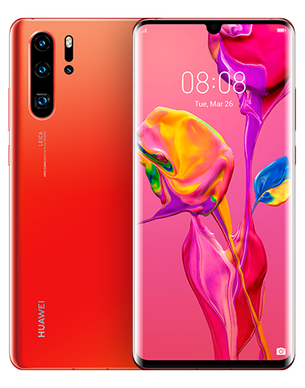
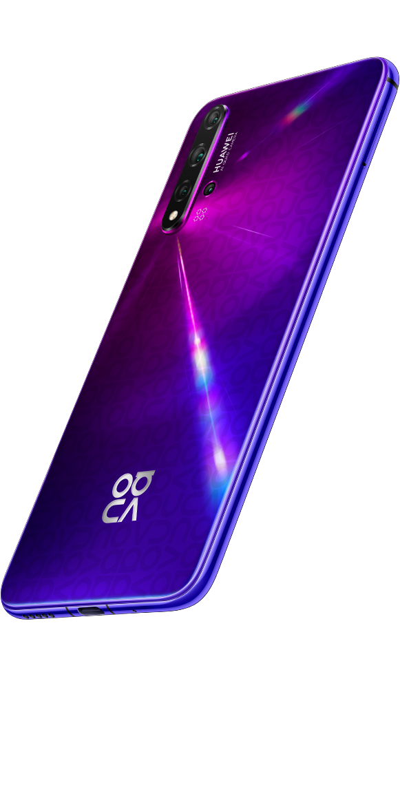

Smartphone
Haut de Gamme
Mate 30 Pro
Le Huawei Mate 30 Pro est un smartphone haut de gamme annoncé le 19 septembre 2019. Il est le premier smartphone à être équipé d'un SoC Kirin 990, il embarque un écran AMOLED de 6,53 pouces et un triple capteur arrière de 40+8+40 mégapixels.
Mate 30
Le Huawei Mate 30 est un smartphone haut de gamme annoncé le 19 septembre 2019. Il est le premier smartphone à être équipé d'un SoC Kirin 990, il embarque un écran AMOLED Full HD+ de 6,62 pouces et un triple capteur arrière de 40+8+16 mégapixels.
P30 Pro
Le P30 pro élu smartphone de l'année 2019 ,est un appareil doté d’un grand écran OLED de 6,47 pouces. Il fonctionne avec EMUI 9 en surcouche d'Android 9 et embarque le processeur Kirin 980 avec 8 Go de mémoire vive et 256 Go de stockage (extensible par NM Card). Sa particularité ? Son quadruple module photo principal (avec capteurs de 40, 20, 8 mégapixels + ToF). Une version 8 Go / 128 Go.
P30
Le Huawei P30 a été annoncé le 26 mars 2019. Équipé d'une puce Kirin 980, il dispose d'un triple capteur photo à son dos, d'un SoC Kirin 980 et d'un écran de 6,1 pouces borderless avec une petite encoche.
Mate 20 Pro
Le Huawei Mate 20 Pro est un smartphone haut de gamme annoncé le 16 octobre 2018. Il est le premier smartphone à disposer d'un SoC Kirin 980, gravé en 7 nm. Il dispose d'un triple capteur photo et d'un écran de 6,39 pouces QHD+ et tourne sous Android 9.0 Pie avec l'interface EMUI dans sa version 9.0.
Mate 20
Le Huawei Mate 20 est un smartphone haut de gamme annoncé le 16 octobre 2018. Il est le premier smartphone à disposer d'un SoC Kirin 980, gravé en 7 nm. Il dispose d'un triple capteur photo et d'un écran de 6,53 pouces full HD+ et tourne sous Android 9.0 Pie avec l'interface EMUI dans sa version 9.0.
P20 Pro

Le Huawei P20 Pro est la version grand format du nouveau flagship de Huawei annoncé le 27 Mars 2018 à Paris. Il dispose d'un SoC Kirin 970 et d'un triple capteur photo arrière de 40+20+8 mégapixels et d'un écran borderless AMOLED de 6,1 pouces
P20
Le Huawei P20 est le nouveau flagship de Huawei annoncé le 27 Mars 2018 à Paris. Il dispose d'un SoC Kirin 970 et d'un double capteur photo arrière de 12+20 mégapixels et d'un écran borderless IPS LCD de 5,84 pouces.
Moyenne Gamme
Nova 5T
Le Huawei Nova 5T est un smartphone sorti en France le 28 octobre 2019. Il propose exactement la même solution que le Honor 20 avec un SoC Kirin 980, 4 capteurs dorsaux et une batterie de 3750 mAh. Il dispose du Play Store et recevra les prochaines mises à jour d'Android par Huawei.
P30 Lite
Le Huawei P30 Lite est un smartphone milieu de gamme aux caractéristiques plutôt intéressantes. On trouve dans ses entrailles le processeur Kirin 710, 4 Go de RAM et 128 Go de stockage interne extensible par Micro SD.
Mate 20 lite

Le Huawei Mate 20 Lite est un smartphone de milieu de gamme annoncé le 31 août 2018. Il dispose d'un écran IPS de 6,3 pouces avec encoche, d'un SoC Kirin 710 épaulé par 6 Go de RAM et d'un double capteur photo de 20+2 mégapixels.
P20 lite

Le Huawei P20 Lite est un smartphone équipé d'un écran bord à bord de 5,84 pouces au format 19/9. Fonctionnant avec Android 8 et la surcouche EMUI 8, il embarque le processeur Kirin 659 couplé à 4 Go de mémoire vive et 64 Go d'espace de stockage extensible.
Entrée de gamme
P smart Z
Il fonctionne avec Android 9 et embarque le processeur Kirin 710F avec 4 Go de mémoire vive et 64 Go de stockage extensible. Il dispose d'un double module caméra principal (16, 2 Mégapixels) et d'un capteur photo frontal de 16 Mégapixels logé dans un tiroir motorisé.
P smart 2019
Le HUAWEI P smart 2019 est équipé du processeur Kirin 710, qui améliore drastiquement les performances du téléphone. La technologie de gravure en 12 nm réduit sensiblement la consommation d'énergie, pour une autonomie décuplée.
Y7 2019
Huawei Y7 2019. Le Huawei Y7 2019 est un smartphone d'entrée de gamme annoncé en janvier 2019. Il est équipé d'un écran de 6,26 pouces avec une définition HD+, d'un SoC Qualcomm Snapdragon 450 épaulé par 3 Go de RAM et d'un double capteur de 13+2 mégapixels.
Y6 2019
Huawei Y6 2019. Le Huawei Y6 2019 est un smartphone d'entrée de gamme annoncé en janvier 2019. Il est équipé d'un écran de 6,09 pouces avec une définition HD+, d'un SoC Helio P20 épaulé par 3 Go de RAM et d'un capteur de 13 mégapixels.
Y5 2019
Huawei Y5 2019 noir. Le Huawei Y5 2019 est un smartphone abordable qui assure les basiques dans toutes les catégories. Avec un design moderne et une autonomie confortable, il saura vous satisfaire. DAS : 0.5 W/Kg.